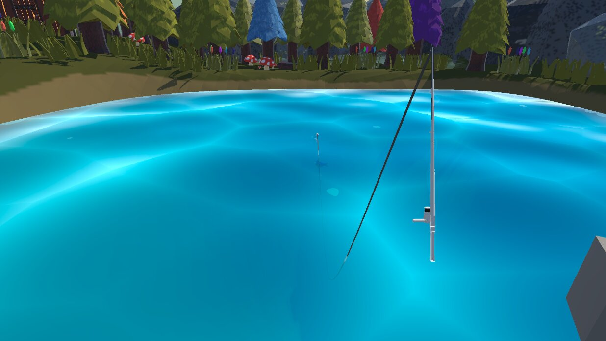

Untitled Fishing Game

OVERVIEW & PREMISE
"Untitled Fishing Game" is an interactive XR arcade experience developed as a university team project. The game connects a player in a VR headset to an external physical arcade display running a separate Unity instance, creating an asymmetric setup where immersive VR fishing mechanics communicate in real time with an arcade spectator and highscore display.
While players cast their lines, catch various fish species, and compete for high scores, the environment gradually shifts over time as subtle atmospheric and horror elements emerge.
TECHNICAL HIGHLIGHTS & ARCHITECTURE
-
Data-Driven Fish Pipeline & Catch Factory (ScriptableObjects):
Designed and structured fish entities as modular Unity ScriptableObjects containing attributes such as score value, name, description, model prefabs, and spawn layer assignment for rapid content expansion.
Developed the Catch Factory to store all fish ScriptableObjects and manage dynamic spawning, implemented new fish types, created a custom fish animator, and set up distinct movement patterns. -
Horror Manager & Environmental Map Transitions:
Architected the core Horror Manager and map change system responsible for triggering dynamic environmental shifts, including texture replacements, sound/audio transitions, and object activations.
Implemented the in-game timer and its World Space UI, which directly interfaces with the Horror Manager by linearly raising the horror intensity value over time. -
Layer & Depth Progression System (Foundations):
Developed the foundational architecture for logical depth layers where fish spawn by designated depth tiers, laying the groundwork for depth upgrades triggered over the network via the external display. -
Network Synchronization & Game State Flow:
Integrated score data transmission into the existing network communication pipeline between the VR headset and the display instance, ensuring synchronized score reporting and proper game-end handling across both instances. -
Arcade Display Client & Highscore Management:
Implemented core UI systems for the standalone display instance, including menu navigation, player name entry for scoring, and persistent highscore saving with options to clear data.
PROJECT METRICS & TECH STACK
-
Engine: Unity (C#)
-
Platform: VR Headset & Dedicated Arcade Display Instance
-
Architecture: ScriptableObject Architecture, Network Synchronization, Event/Manager Patterns
-
Role: Gameplay & Systems Programmer (University Team Project)